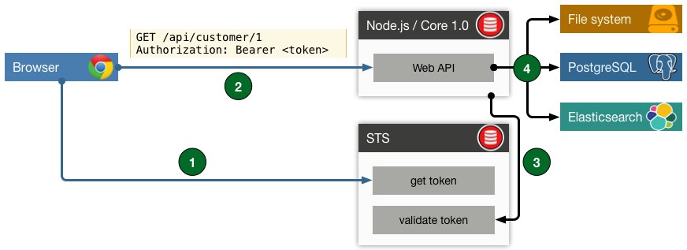

Web APIs
with JavaScript & Node.js
for .NET developers
Manuel Rauber

Introduction
Manuel Rauber |
|---|
|
manuel.rauber@thinktecture.com
|
Talking points
- Web APIs
- Node.js
- Restify
- Token Authentication
- Databases
- Examples
Web APIs
Web APIs - Overview
Web APIs - Overview
- REST APIs, HTTP APIs, whatever APIs
- Model functional services with dedicated interfaces
- Can use several other services for data aggregation
- Secured by tokens
- Consumable by every client which can speak HTTP(S)
Node.js
Node.js is
not
jQuery in cool ;-)
Node.js - Intro
- Server-side JavaScript powered by Chrome's V8 JavaScript Engine
- Asynchronous, event-driven I/O API
- NuGet-like package manager: Node Package Manager (npm)
- Cross platform: OS X, Windows, Linux
- Upcoming: alternative runtime Microsoft's ChakraCore
Node.js - Feature support
- ECMAScript 6
- Experimental ECMAScript 7
- Classes
- Typed arrays
- Fat Arrow/Lambda Expressions
- Templated Strings
Node.js - ASP.NET Core 1.0
| Node.js | ASP.NET Core 1.0 |
|---|---|
|
|
Node.js - server

Node.js - Pros
- Full stack JS development
- Universal JavaScript
Same code on client and server - Built-in streaming
- Open Source loving community
- Enterprise proven
Paypal, Netflix, Groupon
Node.js - Watch out
- Single threaded Event Loop
Avoid heavy CPU usage via JS - Utilizes one CPU only
Scale via clustering - Relational databases can be strange
- Code is documentation
Restify
Restify - Overview
- Node.js module to build Web APIs
- Middleware support (OWIN like)
- Client and server components
- Routing
Restify - Middleware
const server = restify.createServer();
// Runs before .use handlers
server.pre((req, res, next) => { /* Do something */ });
// Runs after .pre handlers
server.use((req, res, next) => { /* Do something */ });
// Sample: Using a predefined middleware
server.use(restify.bodyParser());ASP.NET Core 1.0 - Middleware
public void ConfigureServices(IServiceCollection services)
{
// Add a predefined middleware
services.AddMvc();
}
public void Configure(IApplicationBuilder app,
IHostingEnvironment env,
ILoggerFactory loggerFactory)
{
// Use a predefined middleware
app.UseMvc();
}Restify - Routing
// HTTP GET
server.get('/hello', (req, res) => res.send(200, 'Hello World'));
// HTTP POST
server.post('/upload', someMiddleware);
// HTTP PUT
server.put('/customer/:id', middleware1, middleware2);
// HTTP DELETE
server.del('/customer/:id', anotherMiddleware);ASP.NET Core 1.0 - Routing
[HttpGet("hello")]
public IActionResult Get() {
return Ok("Hello World");
}
[HttpPost("upload")]
public IActionResult Post() { }
[HttpPut("customer/{id}")]
public IActionResult Put(int id) { }
[HttpDelete("customer/{id}")]
public IActionResult Delete() { }
Token Authentication
Token Auth - Overview
- Securing resources (APIs)
- OAuth2 Protocol
Simple & standard method for web, mobile and desktop applications - OpenId Connect
Identity Layer on top of OAuth2
Token Auth - Node.js
- Several node packages
oauth2-server, oauth2orize, OpenIdConnect, node-oauth2-provider - Currently no state-of-the-art package
- Implementation depends on the used package
Token Auth - ASP.NET Core 1.0
- State-of-the-art package
- IdentityServer4
Databases
Databases - Node.js
- Adapters for lots of databases
- NoSQL databases
MongoDB, CouchDB - Relational databases
MSSQL, PostgreSQL, MySQL, Sqlite - ORM: SequelizeJS
Multiple databases, transactions, migrations, replication, query API
Databases - ASP.NET Core 1.0
- Entity Framework 7
- Supports multiple databases
MSSQL, Sqlite, InMemory, PostgreSQL - Code First, Database First
- Migrations
Live Demo
Thank you!
GitHub repository
https://github.com/thinktecture/nodejs-aspnetcore-webapi
Resources
- GitHub repository: https://github.com/thinktecture/nodejs-aspnetcore-webapi
- Node.js: https://nodejs.org/
- Node.js at Paypal: https://www.paypal-engineering.com/?s=node
- Node.js at Netflix: http://techblog.netflix.com/search/label/node.js
- Node.js at Walmart: https://www.joyent.com/developers/videos/node-js-at-walmart-introduction
- Restify: http://restify.com/
- SequelizeJS: http://sequelizejs.com/
- ASP.NET Core 1.0: https://docs.asp.net/
- Entity Framework 7: http://docs.efproject.net/
- IdentityServer4: https://github.com/IdentityServer/IdentityServer4
- Angular 2: https://angular.io/